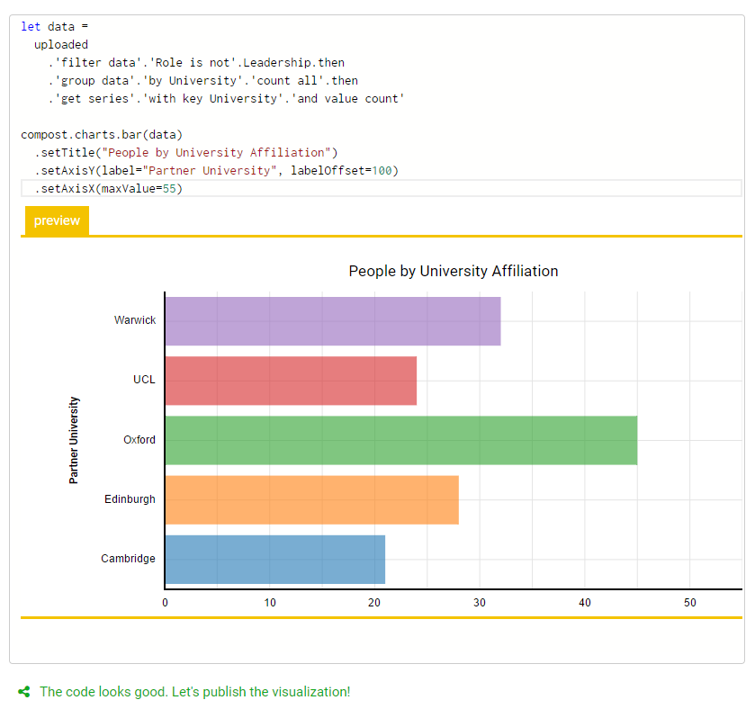
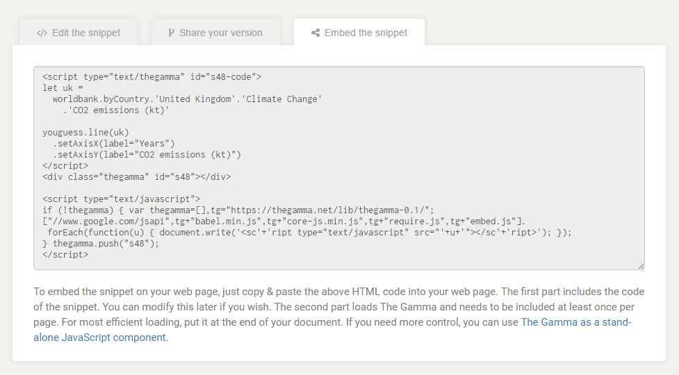

Getting started with The Gamma just got easier
Over the last year, I have been working on The Gamma project, which aims to make data-driven visualizations more trustworthy and to enable large number of people to build visualizations backed by data. The Gamma makes it possible to create visualizations that are built on trustworthy primary data sources such as the World Bank and you can provide your own data source by writing a REST service.
A great piece of feedback that I got when talking about The Gamma is that this is a nice ultimate goal, but it makes it hard for people to start with The Gamma. If you do not want to use the World Bank data and you're not a developer to write your own REST service, how do you get started?

To make starting with The Gamma easier, the gallery now has a new four-step getting started page where you can upload your data as a CSV file or paste it from Excel spreadsheet and create nice visualizations that let your reader explore other aspects of the data.
Head over to The Gamma Gallery to check it out or continue reading to learn more about creating your first The Gamma visualization...
Creating interactive visualization step by step
The four-step walkthrough for creating your own data visualizations contains a number of useful hints in the side panel, so if you read those, you should be able to get what you need. To give a concrete example, let's look at one example problem!
Step #1: Uploading your data
In the first step, you have a number of options - you can choose one of the existing samples, or you can skip directly to the editor (if you know what you want to do). However, the nice new feature is that you can also upload a CSV file or paste CSV data. Here, I'm going to use a list of Turing Institute people that I scraped from the web site.
Step #2: Writing data transformations
When you upload data, the tool will create minimal data transformation that just gets the raw
data table. Here, you can experiment with the data transformations - type . after uploaded
to see what transformations are available!

As you write the script, the tool will check your code in the background and the green message indicates what data you got:
-
If you finish with
get the data, you will see a table icon, which means that we can create table with your data because it has more than two columns. -
If you end with
get serieslike above, you will see a column chart icon - this happens when your key is a string and the series can be visualized as a column or bar chart. -
If you end with
get seriesand your key is numerical, you will see a line chart, because your data can be visualized as a scatter plot or line chart.
Step #3: Creating (interactive) visualizations
Once you create data transformation, the tool takes you to a next step, which is to create a data visualization. Using the code from the previous step, it generates a minimal working visualization.
{kind=link}
There are a number of options you can try here:
-
If you end up with
table.create, table is probably the best we can do, but you can also adapt the code and useget seriesto obtain data in a format that works for column, bar or even line charts. -
The
chart.lineandchart.barcharts work fine most of the time, but we've been working on replacing them with slightly more flexible charts that are available undercompost.charts, so try using those instead as in the screenshot above! -
More interestingly, you can also use
youguessto create New York Times inspired charts where the reader has to make a guess before seeing the results. This works for lines, columns and a few other kinds of charts.
Step #4: Provide details and share the chart
The last page of the process asks you for more information about the snippet and the data source. We are not using the data source information yet, but this will eventually be visible to people who explore snippets and want to find out where the data comes from, so you can use this to clarify the data source.
Once you upload the snippet, it gets posted to The Gamma gallery that you can link to, but more importantly, it also makes it very easy to embed the snippet into your web page. If you go to the "Embed the snippet" tab, you can get short embeddable HTML code snippet that includes the source code of your visualization.
{kind=link}
Embedding the visualization
In the above example, I replaced the bar chart created using compost.charts.bar
with an interactive youguess.columns chart and created a snippet where you can
guess the number of people at the Alan Turing Institute
based on the university with which they are affiliated. If you embed this into your
blog, you will get the following result!
Summary
If you are interested in creating more transparent data-driven visualizations that let the reader explore data further on their own, then The Gamma is here for you! The Gamma Gallery now makes it even easier to get started - in just four steps, you can upload your data from CSV files or Excel spreadsheets, transform them and create (potentially interactive) visualization that is easy to embed into any web page!
If you have been curious about The Gamma, but never quite looked at it because it was hard to to get started, now is your time. For more information:
- Check out the existing sample snippets in the gallery for inspiration
- Watch my Fellow Short Talk at the Turing Institute about the project
- Read my extended abstract (PDF) from European Data and Computational Journalism Conference
- Browse through slides from my Democratizing Data Science talk from Cambridge Spark Data Summit
Published: Wednesday, 14 June 2017, 2:27 PM
Author: Tomas Petricek
Typos: Send me a pull request!
Tags: thegamma, data journalism, data science, research, visualization